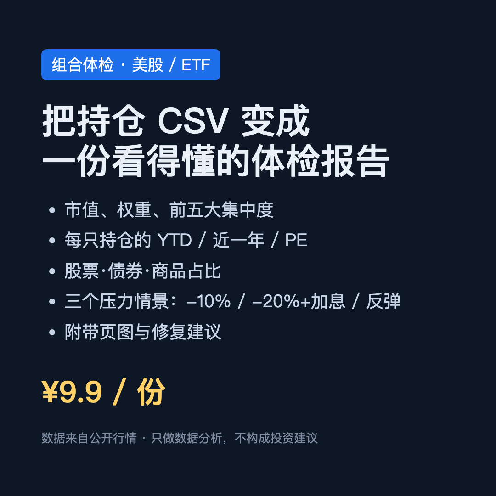

美股 / ETF · 组合体检
把持仓 CSV 变成一份看得懂的体检报告
不用注册、不用连券商。把 ticker, shares 发给我，24 小时内给你一份 Markdown/PDF 报告。

报告里有什么
- 总市值、权重、第一大/前五大集中度
- 每只持仓的 YTD、近一年收益、PE
- 股票 / 债券 / 商品 / 加密的占比
- 三个压力情景：股票 -10%、股票 -20% + 利率 +100bp、风险偏好回升
- 风险提示与通用再平衡建议
¥9.9 / 份 · 三版 ¥39 · 投稿/月度护航 ¥99
支付宝购买（¥9.9）
怎么用
- 整理持仓 CSV：
ticker,shares（如 VOO,30）
- 在 SkillPay 下单，或直接把 CSV 发我确认
- 24 小时内收到报告；需要 PDF/加急另说
边界
只做数据整理、情景测算与通用风险提示，不荐股、不代客理财、不承诺收益；数据来自公开行情，可能有延迟，不构成投资建议。
工具开源：github.com/Lzm1645/portfolio-xray（MIT）。